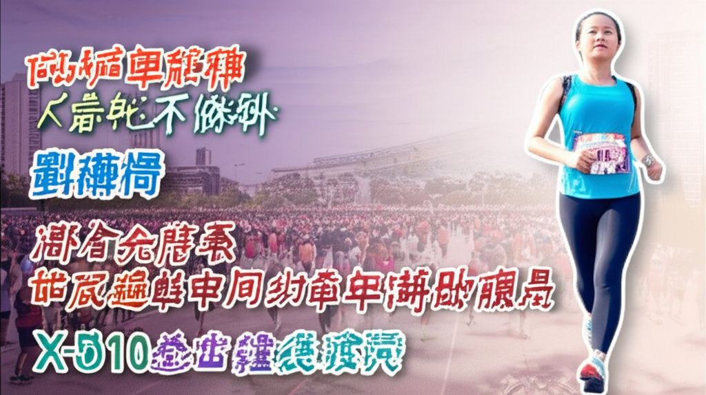

# 超慢跑風潮席捲台灣：從市政活動到奢華補給站
## 引言
近期，一股「超慢跑」的運動風潮在台灣各地興起，不僅成為全民運動的新選擇，更與地方政府活動、健康議題、甚至美食饗宴結合，展現出多元化的發展趨勢。從台中市政府舉辦的「1518市政核心超慢跑」活動，到出現提供龍蝦、干貝等奢華補給的超慢跑體驗，超慢跑已不再只是一種運動方式，更成為一種生活態度與社交方式。
## 主體內容
### 第一點：台中市政府積極推廣超慢跑
台中市政府大力推廣超慢跑運動，舉辦了「1518市政核心超慢跑」活動，吸引了數千民眾參與。運動局長游志祥也親自出席，表達市政府對全民運動的支持。這項活動不僅推廣了超慢跑的益處，也讓市民更認識市政核心區域。台灣馬拉松紀錄保持人許績勝也現身鼓勵跑者享受運動過程，更添增了活動的專業性。
### 第二點：超慢跑的健康益處受重視
超慢跑不僅有趣，其帶來的健康益處也逐漸受到重視。TVBS新聞網報導指出，超慢跑可能有效解決某些健康問題，甚至有醫師推薦。相較於高強度的跑步運動，超慢跑更溫和，適合各年齡層的人群參與。這種低門檻的運動方式，更容易讓民眾持之以恆，達到運動健身的目的。
### 第三點：超慢跑結合奢華美食體驗
除了單純的運動外，超慢跑也出現了與美食結合的創新形式。台中出現了提供龍蝦、干貝、烏魚子等高級食材的超慢跑活動，讓參與者在運動的同時，也能享受美食的樂趣。這種奢華的補給方式，吸引了更多人關注超慢跑，並願意嘗試這種結合健康與享受的新型態運動。
## 結論
超慢跑在台灣的興起，不僅反映了人們對健康生活的追求，也體現了運動方式的多樣化發展。從政府的大力推廣，到結合美食的創新體驗，超慢跑正以各種不同的面貌，融入台灣民眾的生活中，成為一股不可忽視的運動潮流。